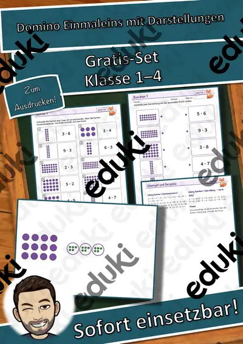

Lern-Girlande Materialpaket: 3 Themenhefte – Ausmal-Anhänger mit Lernauftrag in 3 Stufen (Vorschule, Klasse 1–2, DaZ)
Ausmalen, lernen, aufhängen – drei Themenhefte für Vorschule, Klasse 1–2 und DaZDie Lern-Girlande verbindet Ausmal-Anhänger mit einem echten Lernauftrag: Jedes Kind löst die Aufgabe seiner Stufe, malt aus, schneidet an der dicken Linie aus, locht – und fädelt den Anhänger auf die Klassen-Schnur. Die fertige Girlande ist Dekoration und Lernnachweis zugleich. Drei Formen für drei Zeiten: Laternen (Lichterzeit), Weihnachtskugeln (Advent), Schneekugeln (Winter).
Preisvorteil: Einzeln kosten die 3 Hefte zusammen 8,97 €. Im Paket zahlst du nur 5,99 € (rund 33 % gespart).
Die 3 Themenhefte mit je 4 Motiven
Laternen: Fuchs, Eule, Igel, Maus
Weihnachtskugeln: Wichtel, Rentier, Lebkuchenmann, Kerze
Schneekugeln: Schneemann, Pinguin, Eisbär, WinterhausIn jedem Heft (19 Seiten + Deckblatt)Übersicht mit Anleitung in drei Schritten, Stufen-Erklärung, Girlanden-Tipps und Kurz-Tipp für Lehrkräfte12 Anhänger-Seiten: 4 Motive × 3 Stufen – ★ Symbole nach Legende färben + Muster fortsetzen (auch als Hörauftrag per QR) · ★★ Rechen-Malen (Ergebnis → Farbe) + Zählen · ★★★ Lese-Mal-Auftrag + Schreibanlass auf dem Band
Buchstaben-Anhänger für einen Schriftzug: LICHTERZEIT · ADVENTSZEIT · WINTERZEITBlanko-Anhänger für eigenes Bild, eigene Farbregel und eigenes Muster
Lösungen zu allen Rechen- und Lese-Mal-Aufträgen, Einsatz-IdeenQR-Code: Farbwörter und Hör-Mal-Aufträge zum Anhören – für Kinder, die noch nicht lesen, und für DaZInsgesamt 12 Motive, 36 Anhänger-Seiten, 3 Schriftzüge und 3 Audios. Rechenniveau gestaffelt: Plus bis 10 (Laternen), Plus und Minus bis 10 (Weihnachtskugeln), Plus und Minus bis 20 (Schneekugeln). Einsatz: Freiarbeit, Wochenplan, Mathe-Anfangsunterricht, Leseverstehen und Schreibanlass, Kunst/Feinmotorik, Vertretungsstunde, Klassenraum-Dekoration, Elternabend und Schulfeier.
Motive KI-erzeugt und bearbeitet, Formen und Symbole eigene Vektorgrafiken, keine Fotos, keine realen Personen. Audio per Sprachsynthese. Texte mit KI-Unterstützung erstellt und geprüft.
Viel Freude beim Ausmalen, Lernen und Aufhängen wünscht dir Snice!
Ähnliche Materialien

Domino-Werkstatt: Domino Einmaleins mit Darstellungen – kostenlos, Klasse 2–4

Rechenheft Zahlenraum 100: Üben, Spielen, Kontrollieren

Rechenheft Zahlenraum 20: Übungsheft mit Selbstkontrolle

Domino-Werkstatt: Zahlen-Domino bis 100 – kostenlos, Klasse 1–2

Domino-Werkstatt: Domino Einmaleins mit Darstellungen – Plus-Paket, Klasse 2–4

Domino-Werkstatt: Zahlen-Domino bis 100 – Plus-Paket, Klasse 1–2

Daten & Diagramme zum Ausmalen – Strichlisten, Säulendiagramme Kl. 2–4